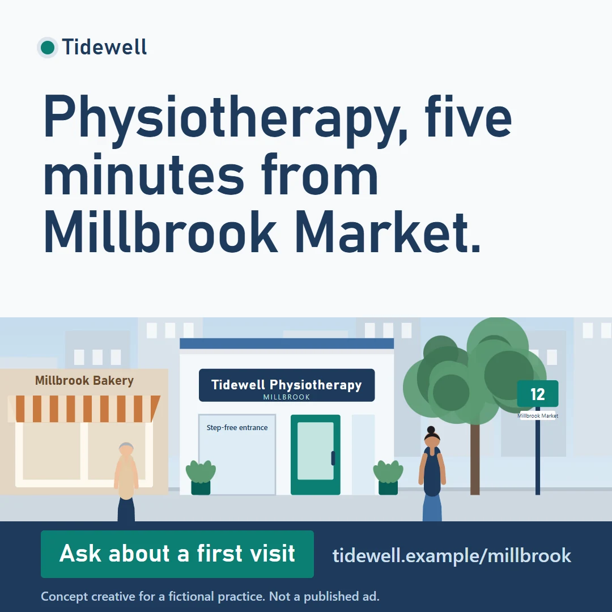

DIGITAL STUDIO FOR BUSINESSES THAT WANT TO GROW
We bring you closer to your customers.
Websites, video and ads that work together to bring your business closer to the right people. One team, one clear strategy.
Isolated M3 prototype · behaviour proof only · links point at app routes that are not served here · EN ES DE
DIGITAL STUDIO FOR BUSINESSES THAT WANT TO GROW
Websites, video and ads that work together to bring your business closer to the right people. One team, one clear strategy.

01
A clear, fast, well-kept web presence, ready to turn visits into enquiries.
We design and look after your website so it explains clearly what you do and makes it easy for someone to write or call.

02
We help your business appear when someone searches for what you offer nearby.
We work on your presence in search and maps for any market where you have customers, not just one region.

04
Google and Meta campaigns tied to goals and results you can understand.
Campaigns lead to pages built for them and are measured in a clear results dashboard.